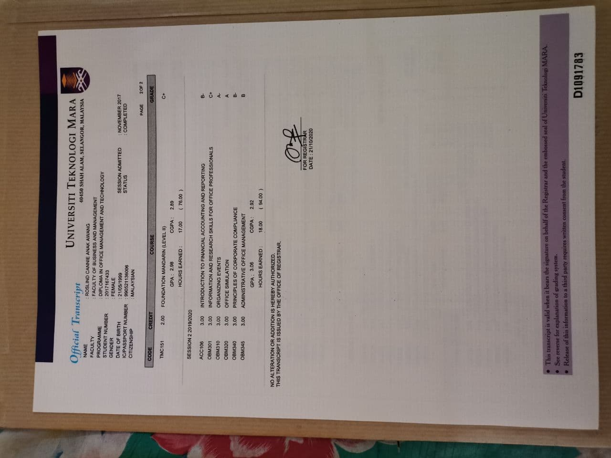
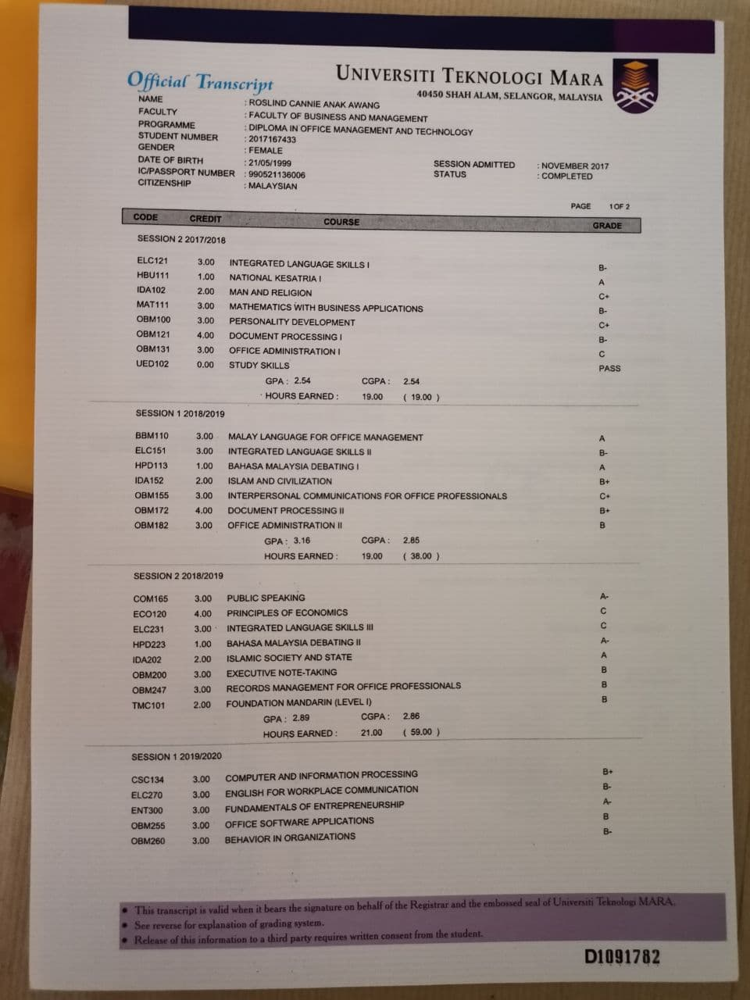
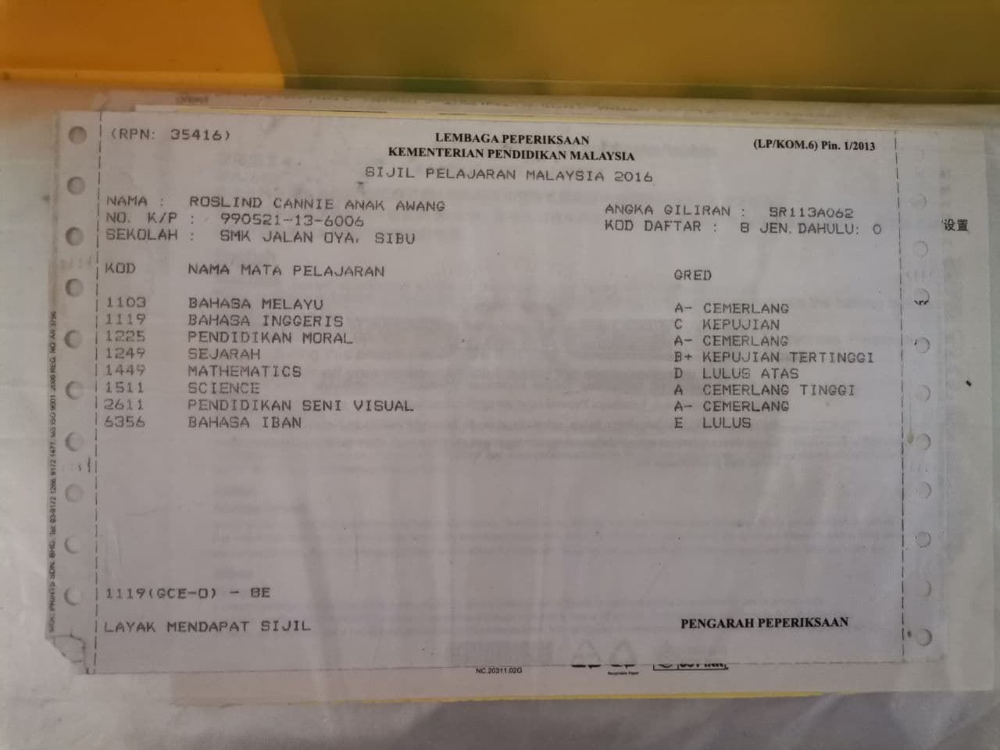

QUALIFICATIONS(EDUCATION)
UNIVERSITI TEKNOLOGI MARA KAMPUS SAMARAHAN SARAWAK
Bachelor in Office Systems Management (Hons)
Finished : Ongoing
UNIVERSITI TEKNOLOGI KAMPUS SAMARAHAN SARAWAK
Diploma in Office and Business Systems
Finished
CGPA
SEM 1: 2.54, SEM 2: 2.85, SEM 3: 2.86, SEM 4: 2.89, SEM 5:2.92
 
SMK Jalan Oya Sibu Sarawak
SPM
1A,3A-,1B+,1C,1D,1E
